The Myth of the Tennis Tip¶
John Yandell¶
"Racquet back early! Contact in front! Keep a firm wrist! Rotate your right side through the shot!"
"Extend the followthrough! Move your feet! Keep your eye on the ball!"
"And remember to stay relaxed!"
We've all heard these "tips" and a few dozen or a few hundred more besides.
Go to virtually any tennis facility and observe any pro teaching a lesson. You'll see this format: the pro on one side of the net with his basket, the student on the other side. The pro will be feeding the students an unending stream of balls, and usually an unending stream of tennis tips as well.
You get one tip: "Swing low to high!" Then you get a few balls. Then the pro says "Good. OK. Better!"
Then you hear the same tip, and get a few more balls. Or a different tip, "Followthrough more!" and then some more balls. The entire hour is typically based on this cycle.
[There's a lot of talking and a lot of hitting, but you see the same students and the same pros out there every week with the same routine--sometimes for years at a time--and often the player's strokes never appear to make significant progress.]
[What is up with that? Is the game just that difficult? Or are there inherent limitations in the process by which tennis is taught, limitations that aren't widely known or understood by either the students or the pros themselves?]
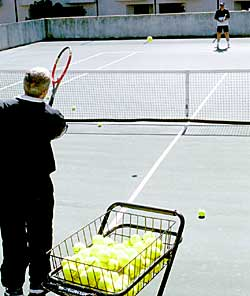
The typical tennis lesson. For the pro, feeding balls and feeding tennis tips go together.
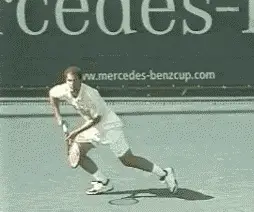
Why does Pete Sampras describe his forehand as just a "natural feeling?"
How effective are traditional, tip-based lessons? Are they really making players as good as they can be? Are there alternative approaches with the potential to accelerate the learning process for average or even elite players?
One problem in tip based teaching is the accuracy of the information. Because the action occurs so fast, teacher and coaches come to conflicting conclusions about what really happens in the strokes.
In this series, we've examined many of the common myths in teaching by analyzing high speed video from Advanced Tennis.
But a second problem of equal or possibly greater importance, is the issue of how teachers communicate information to players, and how this relates to the way most players actually learn.
As described above, the instructional input in traditional lessons is predominately verbal, that is, a continuous (and sometimes overwhelming) stream of verbal tips. Even if we assume the information in a particular tip is accurate, is verbal communication the best method of conveying the information to students?
Unfortunately, the answer is no. Both learning theory and the experiences of top players seem to indicate the exact opposite. For most players, verbal input (i.e., traditional "tennis tips") is the least effective possible method for conveying information about how to play tennis. For many players, traditional tips may actually create an insurmountable barrier to stroke development.
Am I saying that no one has ever learned or improved from traditional lessons? Definitely not! What I am saying is that virtually any player could benefit more from an approach that is consistent with learning theory and the reported experience of the top players.
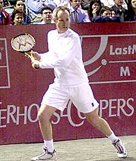
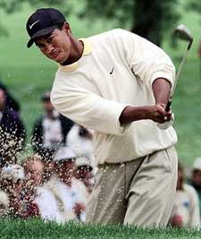
What do Tiger Woods and John McEnroe have in common when it comes to learning theory?
Let's examine why this is. The good news is that if you have struggled in traditional tennis lessons, possibly for years, it still may not be too late for you to make a quantum jump in the level of your play.
In general, people tend to learn in three ways. One, through auditory or verbal input and explanations-this is the basis of the tennis tip approach. Two, through imagery and visualization. And three, through feeling and experiment, what is sometimes called kinesthetics.
The problem is that learning tennis or other sports is primarily visual and kinesthetic, not verbal. But teaching today is primarily verbal.
When I was writing the second edition of Visual Tennis, I commissioned a research study of learning styles by Dr. Gary Price at the University of Kansas.
Based on a survey of several thousand people, he concluded that less than 20% of all learners preferred verbal or auditory input as a primary information source. Over 80% of all learners preferred visual and/or kinesthetic input, and especially, reference to clear models.
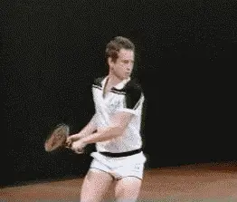
Filming the Winning Edge, John McEnroe at first rebelled at doing the basic sequences.
This research matches perfectly with the reports of hundreds of top athletes in all sports describing how they learned.
Here's a recent quote from Tiger Woods. "I've always been a proponent of pictures. That's how I learned, by watching and imitating." John McEnroe said something very similar: "When I was learning, I just watched Rod Laver and tried to do what he did."
Those may sound like simple statements, but I think they contain a profound truth about learning in sports. Here are two great champions going on record saying that visual imagery was the primary source of input in how they learned to play.
In my experience, I have found that many top athletes actually have a strong aversion to thinking analytically about how they play.
When we were filming The Wining Edge video in the 1984 with McEnroe and Ivan Lendl, John actually balked at doing the basic stroke sequences, although he knew very well they were part of the plan.
"I don't want to do this!" he said, "I'm out here thinking about things--what I'm doing with my right arm on my forehand - and I don't want to think about stuff like that! I'm a 'no brain' player!"
"I know we gotta do the basics man," he said, "but "I hate this!"
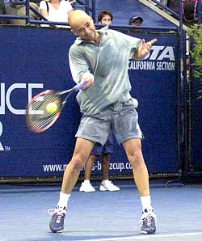
When asked technical questions, Andre's response? "I never think about how I hit the ball.
Luckily, after letting off a little steam, John applied himself to the task at hand, and ended up doing a great job in the basic sequences. In fact, he outplayed Lendl in the backcourt points we filmed. (It would be later that year that Ivan won his first Slam defeating McEnroe in the French final.)
In retrospect it makes an amusing story, but here was one of the greatest (and smartest) players of all time, saying that thinking about how he hit the ball was dangerous to his game!
And he isn't the only legendary player I've encountered who felt this way. I once asked Pete Sampras: "Pete, could you tell me a couple of things about how you hit your forehand?"
His response was, "I don't know."
I said, "What do you mean you don't know? Can't you tell me one or two things about what you try to do out there?"
His response, "I really can't explain it, it's just a natural feeling." Andre Agassi said almost exactly the same thing when I tried to ask him a technical question: "I never think about how I hit the ball."
Here are 3 players with about 30 Grand Slams between them, and none of them wants to think about or talk about how to hit the ball. And there are dozens of other similar anecdotes I could relate from my own experience or have heard from other coaches.
So if good players find verbal descriptions useless or counterproductive, what does that say about how most of us try to learn through traditional lessons? Don't we spend most of our time on the court trying to "understand" how to hit the ball? Can all that verbal information ever translate into actual strokes or shots?
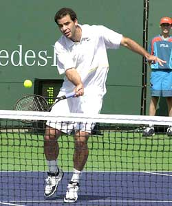
What really goes through the mind's of top players when they hit the ball?
Learning theory and the experience of great players seems to show that it's the wrong approach for the overwhelming majority of students. Why? Because learning tennis or playing great tennis isn't a matter of hearing or listening. It's a matter of seeing and feeling.
[Sure, some players are going to want a detailed verbal description of exactly what goes on in every stroke. And some players may be able to take verbal information and translate it into imagery and kinesthetics. But in general, the language of teaching just doesn't speak to most players in the language they need.]
Most good players can't talk about their strokes in words because that's not how they communicate to themselves on the court. Players like Sampras or Agassi or McEnroe hit shot after shot with astounding consistency and precision, mixing stroke type, speed, spin and location. But they aren't thinking about how they do that in technical terms.
[So how do they do it? Although we don't have the neurological research to prove this point (at least not yet) my belief is all this happens through subconscious processes that involve mental imagery and feeling.]
Top players seem to experience the game at a sub-verbal level. They use images and feelings to communicate information to their bodies, make split second decisions, and execute under pressure. They imagine what they want to do, and their tennis follows their imagination.
Once again, something McEnroe told me in 1984 gives an insight into how this actually happens. We were talking about how the Winning Edge video was designed to give players clear visual models of himself and Lendl.
Suddenly John stopped and said something surprising--as if he were realizing it himself for the first time. "Sometimes I'll see the shot flash across my mind's eye just before I hit it!"
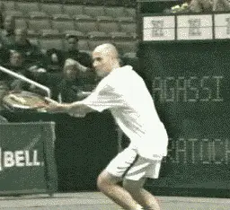
Is mental imagery the secret language players use to communicate with their bodies?
Here was a direct insight into what goes through the mind of a great player in match play. Apparently John was pre-visualizing his shots, butt process was completely subconscious. John was apparently completely unaware of what he was doing until our conversation made him realize it. (And he probably went back to being unaware of it again shortly thereafter.)
Over the years, I have heard many players including other great former champions say the same or similar things, that they spontaneously pre-visualized their shots before they hitting them. Others like Billie Jean King, said once they realized this, they learned to do it in a systematic way.
I am convinced that any player at any level can learn to do the same thing. You can develop the shots you really want, and also hit them consistently under pressure, through the use of mental imagery and feeling-if you can free yourself from the tyranny of the verbal tennis tips that dominate traditional teaching.
I know this because I have seen it time and time again, with hundreds of players, from complete beginners up to elite level pros. I even saw it again with John McEnroe later in his career when he used mental imagery from the Winning Edge--this time in a systematic way--to retool his famous serve (The Visual Tennis System: The McEnroe Case Study).
It may be a cliche to say a picture is worth a thousand words, but when it comes to learning to play tennis, it's true. If mental imagery really is the secret internal language of tennis, how can you learn to speak it yourself?
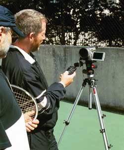
Without video feedback, you'll never understand how your own strokes are comparing to the model.
Many great players seemed to have absorbed or developed their technique just by watching their heroes. You've probably had a similar experience yourself; playing exceptionally well after you watched a great match-at least for a while.
But you can also learn to recreate this experience at will. How? The secret is to develop clear physical model and corresponding mental images of what you are actually trying to do on all your strokes.
These models are constructed from a few simple key positions. By passing through these key positions you learn to see and to feel what the stroke is like inside your own mind's eye. Creating these internal mental pictures/feelings is the key to being able to replicate the model accurately and consistently over time.
[First, the player learns to develop these key positions physically without the ball. At the same time, he creates to clear mental images. In working with hundreds of players over the years, I've found one thing to be absolutely true. If the player cannot replicate the key positions in the stroke physically without the ball, and also, visualize these positions in his mind's eye, he has no chance of doing it with the ball in actual play or even in a simple ball feed or rally drill.]
Direct visual feedback is also an absolutely essential part of the process. This means using on court video on a regular basis. If you are not videoing yourself and comparing your strokes to your model positions, your chances of really developing the stroke patterns you want are virtually zero.
So let's see how this process might replace a seemingly obvious traditional tip such as: "Swing low to high for topspin."
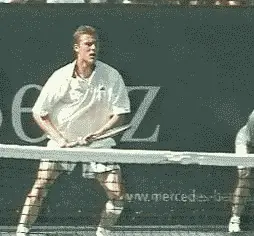
In the modern game, what does a phrase like "swing low to high" really mean?.
Now that sounds like good advice. We all want topspin right? But what does that phrase actually mean? What's "low" and what's "high?"
The racquet could be in 10 different "low" positions at the start of the foreswing. It could be in 10 different "high" positions at the finish. Would any of them be correct?
A couple of months ago, an article in a major tennis publication from a former high level national coach, explained that the player should drop the racquet two feet below the ball to hit topspin. Compare that verbal tip with actuality of the images below.
Without references to clear images of what actually happens, tips like "swing low to high," are just part of an unending labyrinth of unproductive and misleading verbal information. The solution is to just short circuit the whole process by creating visual and kinesthetic models that don't rely on complex (and often inaccurate) verbal explanations.
What if you really could learn to feel and to visualize a few simple stroke patterns modeled on those of the top players? What if your body knew exactly what was "low" and what was "high" and could find these positions naturally, automatically, and consistently?
What if you could execute your strokes effortlessly, even under pressure, by following your mental images just like John McEnroe?
This series of articles on myths has provided dozens of positive images of top players. But in another sense, the series has focused on the negative, criticizing common "myths" and talking about what not to do.
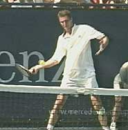
**What if you could develop and execute your strokes with a few simple physical positions\
and mental images?**
In the coming issues, I'll be starting a new series showing you how to use imagery to build the strokes in the modern game from the ground up, based on what I call "Positions Theory."
We'll break each stroke down into a simple series of "Positions," based on the great players. Then we'll use them to construct mental and physical models of the strokes to guide you in developing your shots.
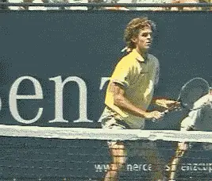
What are the key positions and mental images in building models of the "modern" strokes?
For anyone familiar with my work, you know that this was exactly the approach I took in the Visual Tennis book and video. That work created specific model positions of classical stroke patterns and helped players create and use mental images to build and execute their shots.
And much of what we have created for you here at TPA is based on the power of visual input-the animations in all our articles, our entire Stroke Archive, as well as the high speed video developed by Advanced Tennis.
Although Visual Tennis was based on a painstaking analysis of existing video and still footage, these new resources make it possible to apply the approach much more widely to the modern game.
So in this new series we'll examine high speed video of the top players, try to identify the critical positions and then use these positions to build a new series of stroke models. We'll learn how to create the positions physically and mentally, and then how to use this visual and kinesthetic information to develop and execute the strokes in actual play.
We'll start with one of the most puzzling and difficult shots in the game, the so-called "modern" forehand. We'll look across the grip styles and see what's common and what's different in players from Pete Sampras to Andre Agassi to Andy Roddick. Then we'll show you how to build your own personal model based on your particular grip and style of play. I'm looking forward to it! So stay tuned.

John Yandell is widely acknowledged as one of the leading videographers and students of the modern game of professional tennis. His high speed filming for Advanced Tennis and TPA have provided new visual resources that have changed the way the game is studied and understood by both players and coaches. He has done personal video analysis for hundreds of high level competitive players, including Justine Henin-Hardenne, Taylor Dent and John McEnroe, among others.
In addition to his role as Editor of TPA he is the author of the critically acclaimed book Visual Tennis. The John Yandell Tennis School is located in San Francisco, California.